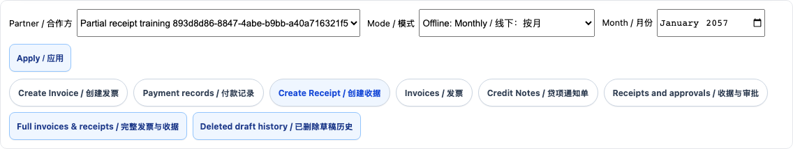
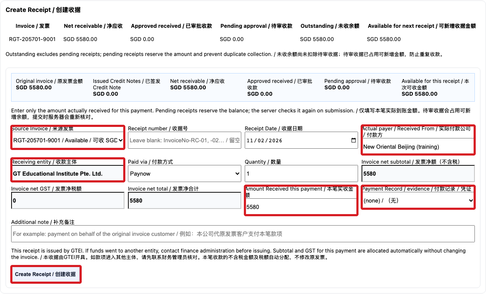

Partial partner receipts and outstanding balances
财务 / Finance
使用方法 / How to use按编号逐步操作，红框标出本步操作位置；页面或权限不一致时停止并联系主管。
Follow each numbered step. Red boxes identify the relevant control. If the page or access differs, stop and contact your manager.
在 Partner Settlement 选择合作方、结算方式及月份，进入 Payment records 核对本笔到账凭证，然后打开 Create Receipt。确认发票及币种。
In Partner Settlement select the partner, mode and month. Check payment evidence in Payment records, then open Create Receipt. Confirm the invoice and currency.

选择 Source Invoice，在 Actual payer 填写本次实际付款公司；核对 Receiving entity 与 Paid via。在 Amount Received this payment 只填本次实际到账金额，并选择对应付款凭证。
Select Source Invoice, enter the Actual payer for this payment, and verify Receiving entity and Paid via. Enter only the amount actually received and select its payment evidence.

查看 Available for this receipt。金额不能超过可新增余额；收据号可留空自动生成。核对后点击 Create Receipt 并按财务审批流程处理。
Check Available for this receipt. It must cover this payment. Leave the receipt number blank for automatic numbering if appropriate. Select Create Receipt and follow finance approval.
下一笔到账后重复操作，填写该笔实际付款公司和金额。Outstanding 是尚未扣除待审收据的未收余额；Pending approval 会占用可新增收据金额。
When another payment arrives, repeat the process with its payer and amount. Outstanding excludes pending approvals; pending receipts reserve the amount available for a new receipt.
金额、付款方、收款主体或付款证据不一致时先停止并联系财务负责人。未到账的余额不要提前开成已到账收据。
If the amount, payer, receiving entity or evidence is inconsistent, stop and contact the finance lead. Do not issue a receipt for money that has not arrived.